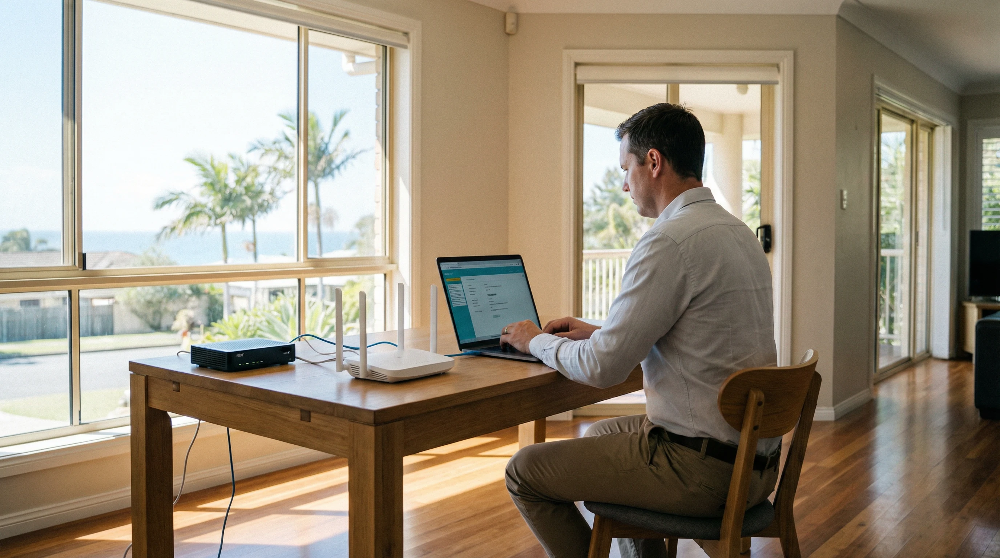
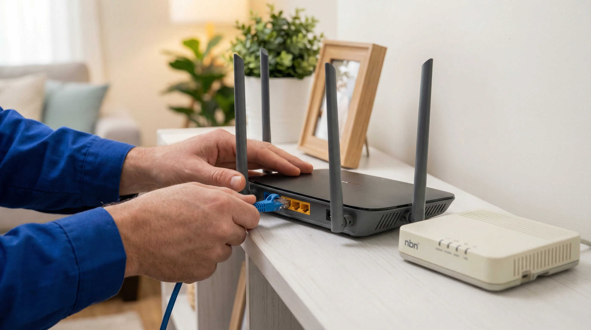
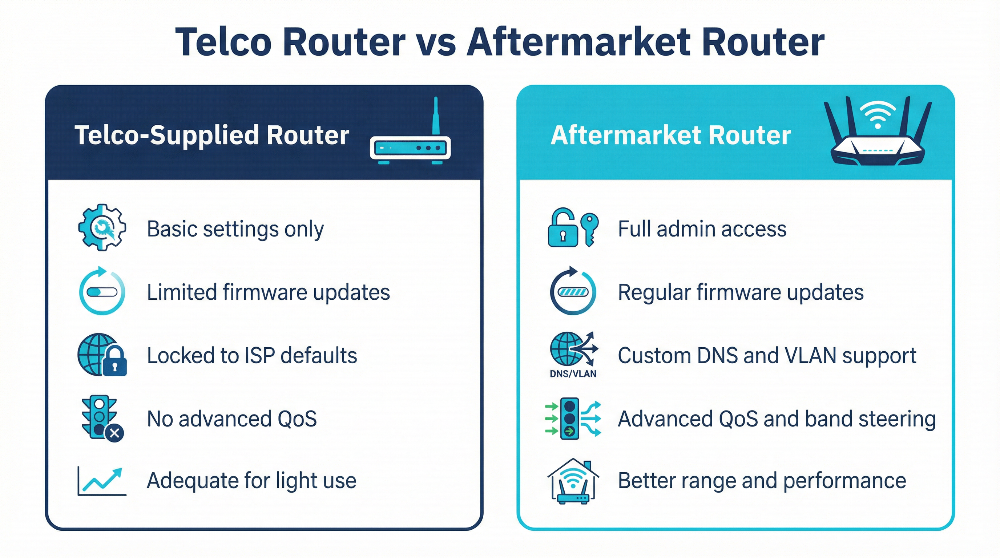

Router and Modem Configuration on the Gold Coast — What You Need to Know
Router and modem configuration on the Gold Coast is one of the most common IT jobs we handle. Most homes and small businesses have a working NBN connection but are not getting anywhere near the speeds their plan is paying for. The reason is almost always the same: the router or modem has never been properly configured, or the settings that were applied at installation are no longer suitable for how the household uses the internet today. We come to your home, assess what you have, configure it correctly, and run a speed test before we leave.

Working With Your Telco-Supplied Router or Modem
When you sign up to an NBN plan in Australia, your internet service provider will almost always send you a modem-router combo unit in the mail. Telstra, Aussie Broadband, Vodafone, On the Net, Superloop, Internode, iiNet and most other NBN providers do this as standard. The device they send is pre-configured to connect to their network, which means it will work straight out of the box for basic internet access. What it will not do is perform at its best without some additional configuration work.
Telco-supplied devices are designed to be generic. They need to work across thousands of different homes with different NBN connection types, different numbers of devices, and different usage patterns. Because of that, the default settings are conservative. The WiFi channels are often set to automatic, which means the router picks whatever channel it feels like at startup — and in a suburb like Robina or Varsity Lakes where dozens of routers are operating in close proximity, that can mean significant interference. The QoS (Quality of Service) settings, which control how bandwidth is shared between devices, are usually switched off entirely. Guest networks are disabled. Firmware is often out of date by the time the box arrives at your door.
We reconfigure telco-supplied routers and modems regularly. The process involves logging into the admin panel, reviewing every setting category, and making changes that are appropriate for your specific home and usage. That includes setting fixed WiFi channels on both the 2.4GHz and 5GHz bands, enabling band steering where the hardware supports it, configuring a strong network name and password, enabling the firewall, updating the firmware, and setting up a guest network if you want one. For households with teenagers or young children, we can also configure parental controls that restrict access to certain content categories or set time limits on internet access for specific devices.
Telstra’s supplied hardware has changed over the years. Earlier Telstra-branded gateway devices used Technicolor hardware underneath, while more recent models use Sagemcom. Both are capable devices when configured properly. The Telstra Smart Modem range supports 4G backup, which is a useful feature for households where a brief NBN outage would cause real disruption — but that feature needs to be set up correctly to work reliably. We handle all of that.
Aussie Broadband is one of the more popular NBN providers on the Gold Coast, particularly in areas like Helensvale, Coomera and Southport where newer housing estates have good FTTP coverage. Aussie Broadband typically supplies a Sagemcom modem-router, and while it is a solid unit, it has the same limitations as any ISP-supplied device. The admin interface is accessible but not always intuitive, and many of the more useful settings — like VLAN tagging for IPTV, or adjusting the MTU for better performance on certain connection types — are buried several menus deep. We know these devices well and can configure them quickly.
Vodafone NBN customers on the Gold Coast typically receive a Huawei or similar unit. On the Net, which has a strong presence in Queensland, provides its own branded hardware that is generally a rebranded unit from one of the major ODM manufacturers. Superloop and Internode customers often receive TP-Link or similar hardware. Regardless of which provider you are with, the configuration principles are the same, and we can work with whatever device you have.

Upgrading Your Router While Keeping Your Existing NBN Connection
One of the most effective ways to improve your home internet experience on the Gold Coast is to replace the telco-supplied modem-router with a separate, higher-quality aftermarket router. This does not mean changing your NBN provider or your plan. It means keeping your existing connection and simply using better hardware to manage it.
The way this works depends on your NBN connection type. If you are on FTTP (Fibre to the Premises), your NBN connection box — the NTD (Network Termination Device) — is fixed to the wall and cannot be changed. What you can do is connect a separate router to the NTD via ethernet and configure that router to handle all the WiFi and network management in your home. The telco-supplied modem-router gets disconnected, and the aftermarket router takes over. This is a clean setup that gives you full control over your network.
For FTTN (Fibre to the Node) and FTTB (Fibre to the Building) connections, the situation is slightly different. These connection types use the existing copper phone line for the last section of the network, which means you need a modem that supports VDSL2 to connect to the NBN. In this case, you have two options. You can use a modem-router combo that supports VDSL2 — brands like ASUS, Netgear and TP-Link all make suitable units — or you can use a dedicated VDSL2 modem in bridge mode connected to a separate router. The second option gives you more flexibility but requires more configuration. We handle both setups regularly for Gold Coast homes in suburbs like Nerang, Burleigh Heads and Palm Beach where FTTN is still common.
HFC (Hybrid Fibre-Coaxial) connections, which are common in older suburbs across the Gold Coast, use a coaxial cable connection to the NBN. The NBN provides a connection box for HFC, and from there you connect your router via ethernet — similar to the FTTP setup. This makes it straightforward to use an aftermarket router with an HFC connection.
Fixed Wireless NBN, which serves some of the more rural and semi-rural areas around the Gold Coast hinterland, uses a roof-mounted antenna to receive the signal. The antenna connects to an indoor connection box, and from there you connect your router via ethernet. Again, this is compatible with aftermarket routers without any special configuration beyond the standard WAN setup.

Which Aftermarket Router Is Worth Upgrading To?
The right aftermarket router depends on the size of your home, the number of devices you have connected, and how you use the internet. A two-bedroom unit in Surfers Paradise with four or five devices has very different requirements from a four-bedroom house in Coomera with fifteen or twenty devices including smart home gear, security cameras, gaming consoles and multiple laptops.
For most Gold Coast homes, a mid-range dual-band or tri-band router from ASUS, Netgear or TP-Link will be a meaningful upgrade over a telco-supplied unit. The ASUS RT-AX series, the Netgear Nighthawk range and the TP-Link Archer series all offer significantly better WiFi performance, more granular QoS controls, and more reliable firmware update schedules than the average ISP-supplied device. They also have better admin interfaces, which makes ongoing management much easier.
For larger homes or homes with many devices, a mesh system is often a better solution than a single high-powered router. Mesh systems use multiple nodes placed around the home to create a single, seamless WiFi network. Google Nest WiFi Pro, Netgear Orbi, Amazon Eero Pro and TP-Link Deco are the most commonly requested mesh systems we install on the Gold Coast. If you are considering a mesh upgrade, see our mesh network setup Gold Coast page for more detail on how these systems work and what to expect from an installation.
One thing worth knowing before you buy: not every aftermarket router is compatible with every NBN connection type. FTTN and FTTB connections require a modem that supports VDSL2, and not all routers include a built-in VDSL2 modem. If you buy a standard router without checking this, you will need a separate modem as well. Call us on 07 3041 8993 before purchasing new hardware and we will tell you exactly what will work with your connection type. It takes two minutes and can save you from buying the wrong thing.
Common Router Configuration Problems We Fix on the Gold Coast
The most common issue we see is a router that has never had its default settings changed. This is more common than you might expect. Many Gold Coast households have been using the same router for three or four years with the factory default WiFi password still in place, the firmware never updated, and the admin password still set to “admin” or “password”. This is a security problem as much as a performance problem. Default credentials are publicly documented and widely known, and a router with default settings is an easy target.
Channel congestion is the second most common issue. In dense residential areas — apartment buildings in Broadbeach or Surfers Paradise, or tightly packed streets in Robina — the 2.4GHz band is often saturated. Every router in the building is broadcasting on one of three non-overlapping channels (1, 6 or 11), and if several of them land on the same channel the interference can be severe. The fix is straightforward: we scan the local radio environment, identify the least congested channel, and set the router to use it. The 5GHz band has more available channels and is less prone to congestion, so we also make sure devices that support 5GHz are connecting to that band rather than defaulting to 2.4GHz.
DNS configuration is another area where small changes can make a noticeable difference. Most routers default to using the ISP’s own DNS servers, which are not always the fastest. Switching to a faster public DNS resolver — such as Cloudflare’s 1.1.1.1 or Google’s 8.8.8.8 — can reduce the time it takes for websites to load, particularly on connections where the ISP’s DNS servers are under load. We make this change as part of a standard configuration visit when it is appropriate for the customer’s setup.
MTU (Maximum Transmission Unit) mismatches are a less obvious but surprisingly common cause of slow or unreliable internet on NBN connections. The correct MTU value depends on your connection type and your ISP’s network configuration. An incorrect MTU can cause packet fragmentation, which slows down large file transfers and video streaming. We check and correct the MTU as part of every router configuration visit.
Firmware updates are something most people never think about, but they matter. Router manufacturers release firmware updates to fix security vulnerabilities, improve stability and sometimes improve performance. A router running firmware from two or three years ago may have known security issues that have since been patched. We update firmware as part of every configuration visit, and we check that automatic update settings are configured correctly so the router stays current going forward.
When to Call Us for Router or Modem Help on the Gold Coast
If your internet is slower than it should be, if your WiFi drops out regularly, if you have just moved into a new home on the Gold Coast and need everything set up properly, or if you have bought new hardware and are not sure how to configure it — those are all good reasons to call. We also handle situations where someone has changed a setting and broken something, where a router has been factory-reset and needs to be reconfigured, or where a new NBN plan has been activated but the router has not been updated to match the new connection settings.
We cover all Gold Coast suburbs including Southport, Burleigh Heads, Robina, Nerang, Helensvale, Coomera, Palm Beach, Varsity Lakes, Coolangatta, Surfers Paradise and Broadbeach. fast-turnaround appointments are available most days. Call 07 3041 8993 to book or use the booking button above to pick a time that suits you.